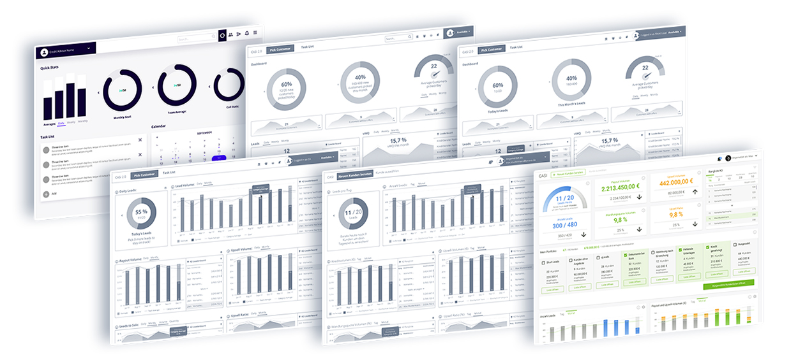

The brief:
To make major improvements to the credit advisory interface to help maximize the efficiency of smava's credit advisors
through openly exploring the perfect mix of digital & human assistance.
The goals:
Increase efficiency of credit advisory service
Alleviate repetitive manual work
Reduce human error through automation
Simplify the complicated search for data and information
Modernise the appearance of the user interface.

CASI = Credit Advisory Service Interface
The main focus of CASI is:
To visualize applicant and brokerage data
To create and optimize loan offers
And to facilitate customer communication
The approach:
In parallel with the backend and frontend migration to the new microservice architecture, we decided to start the
redesign from the front of the application. It was fairly clear from
the start that including a new dashboard would help alleviate one of the issues, namely helping credit advisors save time looking for their KPI's within complicated, nested Confluence pages and fragmented Tableau reports.
Why not just use an existing CRM tool like Salesforce, Zendesk or Fresh Sales?
Because of the unique customer management needs of not only the credit advisors, but of their end-clients too. Many
of the tools investigated as potential candidates only provided of the CRM disciplines required or don't offer any
OmniChannel capabilities. Others had lock-in subscription models that would incur high switching costs in the event
that the promised product did not satisfy smava's customer management needs.
The Result:
After several user tests and prototype revisions, we arrived at an easy and intuitive dashboard that contains the
main KPIs within one easy view, provides a pipeline overview of all the client statuses within a credit advisor's
portfolio, and displays user leaderboards and rankings.
The Future:
Though the project is currently coming together under various constraints, the overall user results have been positive.
The project is expected to continue evolving and improving. We are looking forward to finding better ways of simplifying
the visual expression of necessary data, improving data filtering, continuing update of the platform and advisory
systems interface, and adding more automation in place of tedious activities.